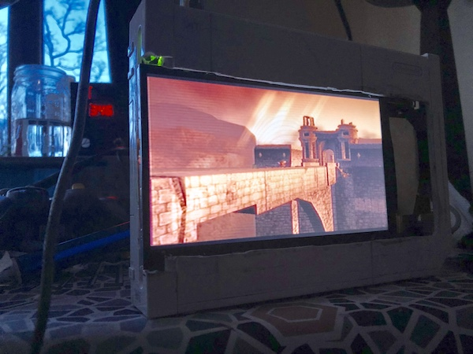
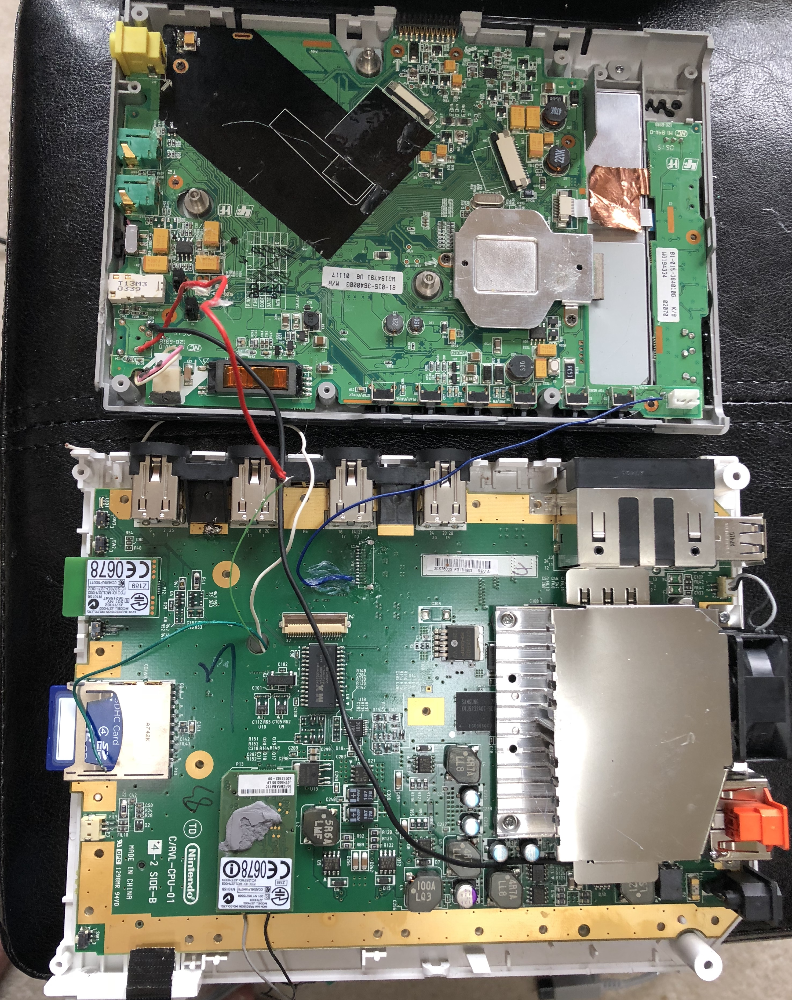
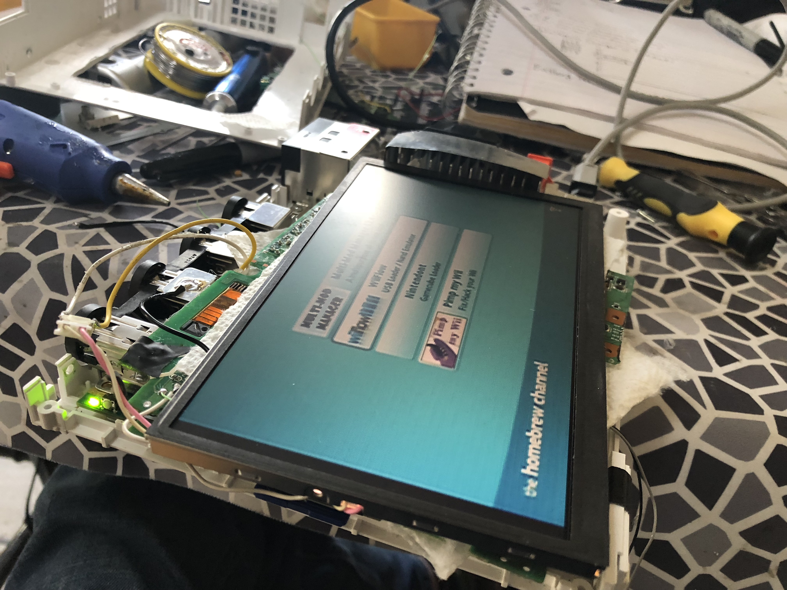
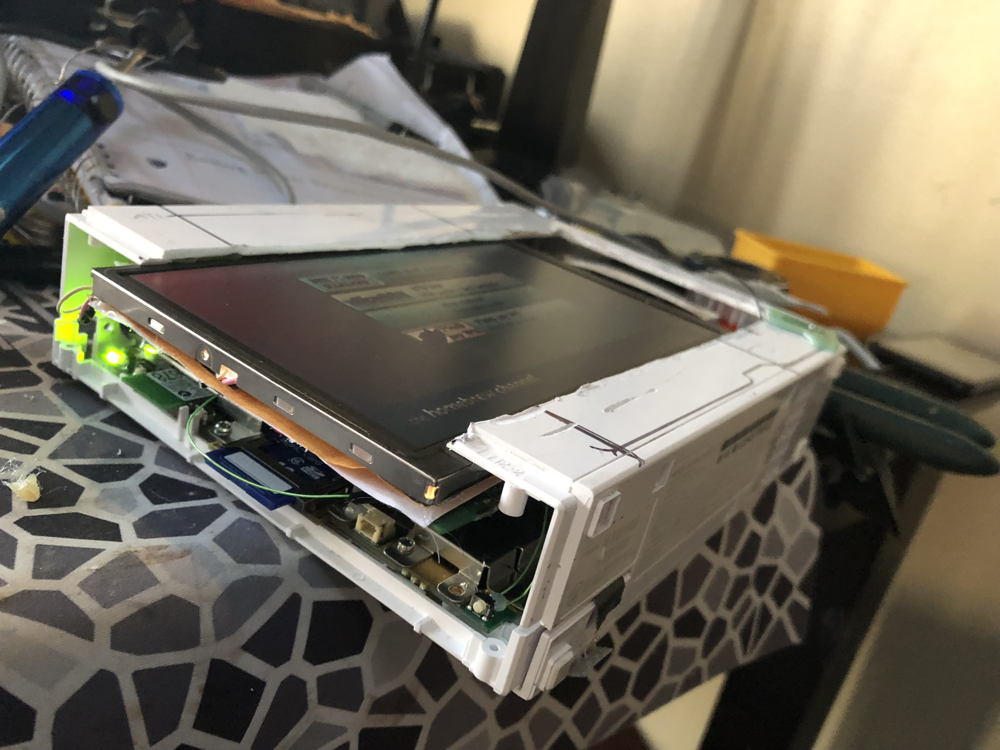
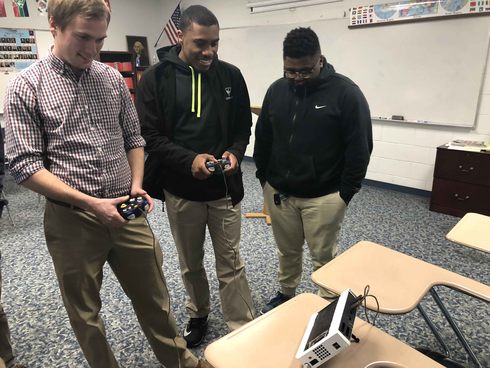

Mason's Portable Wii:
How I made it:

The first Step was finding a source for decent quality/high resolution screen, but small.
I debated using a laptop screen, but decided not to because the expensive LCD controllers.
After digging in my part bins, I found an old Sony DVD Walkman that someone donated.
The next task was stripping it of unimportant components and features, like the dvd drive.
Then I went to work finding pinouts of all the marked i.C.s, around the dvd players board.
Next I made pinouts of the components that were unmarked, or had no pinout avalible.
Then I moved on to strip down the Wii of all its unimportant parts and components.
The main thing I removed from the Wii was the dvd drive, for space and to power the LCD.

After all that was done, I could finially begin to begin fitting everything together!
During this process, I had to strip down the Wii and LCD even more than I did before.
I cut the CPU heaksink fins in half, to make room for the LCD Screen Inside the Wii.
Then I went to work wiring the LCD Power to the Wii's DVD Drive Power connector.
Next I Started molding the shell of the Wii to contain the LCD Screen inside it.
I then Wired the Video Output of the Wii to the Video in on the LCD Controller board.
Then I molded the faceplate of the Wii so the LCD Screen would be able to fit.
Lastly I hotglued the Wii's Shell Closed and attached the rear kickstand.

I spent a while testing everything extensively, making sure it was stable
because I wasn't sure if it would be able to cool it's self enough with only
half of the Wii's origional heatsink ! I also made sure that the video feed
was not interfered with by noise from the backlight Inverter's transformer.
Everything worked, and worked perfectly, It might not look the best,
but it works ! The only issue I had was with audio. Initially I thought
I would just use the av port and convert the audio from there, however
the audio doesnt seem to want to work, but I can live with that for now :P

I wanted to see what others thought of it, I got responses such as:
"How did you make that ?"
and
"Thats Insane !"
My classmates were thrilled at the thought of being able to play something
like Super Smash Bros with other classmates during lunch or down time.
Overall, I would consider this project a Success, It is functional and compact.
Within the next few weeks, I plan on making it fully portable, using a custom
external battery pack.